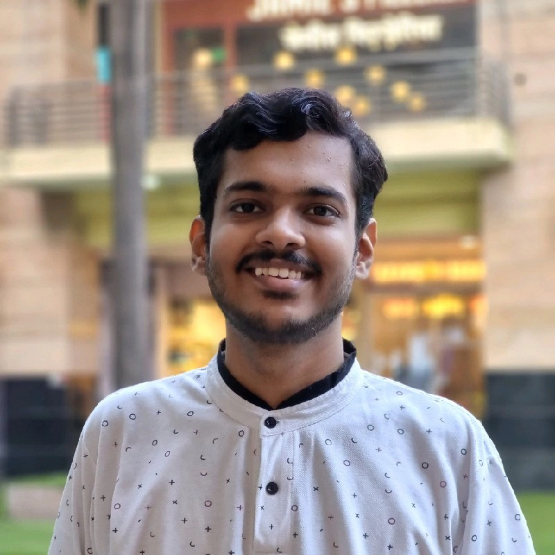

Akhil Ahuja

Summary
I am a passionate individual with a drive to create new things in the digital world.
Education
- ICSE - Euroschool Airoli - 80%
- HSC - Commerce - Vasant Vihar Junior College - 81%
- Bachelor's in Accounting and Finance - K.J. Somaiya College of Science and Commerce - CGPA 9.51 - Batch Topper 2022
Work Experience
Skills
- Game Testing/Server Testing for Cloud Streaming using software applications like Moonlight and Sunshine
- Accounting
- Basic HTML & CSS
- Possess the knowledge of basic MS Office Operations
- Well versed with Windows OS and troubleshooting
- Well versed with PC hardware and possess some practical knowledge
Awards and Certifications
- Bsc - BAF Topper 2022 at K.J Somaiya College of Science and Commerce
Other